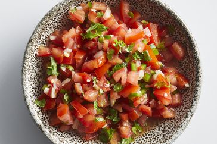

Home
Salsa

A classic pico de gallo made with simple ingredients, the way it should be! Dip and scoop away with this flavorful salsa fresca.
Ingredients
- 1 3/4 cups finely chopped roma tomatoes
- 2 tablespoons finely chopped onion
- 1 small fresh jalapeño pepper, seeded and finely chopped
- 1/2 teaspoon lime zest
Directions
- Stir together tomatoes, onion, cilantro, jalapeño , lime zest, lime juice, garlic, and salt in a bowl. Chill, covered, at least 1 hour or up to 4 hours
Enjoy!